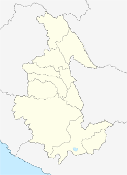
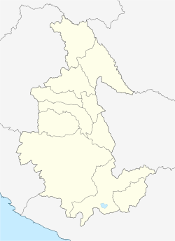

;
; 
Ayacucho (fundada como San Juan de la Frontera de Huamanga el 25 de abril de 1540 y llamada Huamanga hasta el 15 de febrero de 1825) es una ciudad peruana capital del distrito homónimo, de la provincia de Huamanga y del departamento de Ayacucho. Se encuentra situada en la vertiente oriental de la cordillera de los Andes a una altitud de 2761 m s. n. m. Y se caracteriza por un clima templado y seco, con brillo solar todo el año.
; La ciudad de Ayacucho se encuentra ubicada en el extremo noroccidental del departamento y al sur de la sierra central del país, en el área meridional de los Andes. Sus coordenadas geográficas son: 13°9′37″S 74°13′33″O / -13.16028, -74.22583. La ciudad ocupa el distrito de Ayacucho, también conocido como centro histórico,y erróneamente denominado 'cercado', así como el área urbana de los distritos de Carmen Alto, Andrés Avelino Cáceres, San Juan Bautista y Jesús Nazareno, dentro de los valles de los ríos Huatatas y Chacco.
 
La ciudad de Ayacucho está ubicada en la región quechua, de acuerdo a la clasificación hecha por el geógrafo peruano Javier Pulgar Vidal; quien dividió el territorio del Perú en ocho regiones naturales. Esta región se caracteriza por tener quebradas amplias con fondos planos. El clima es templado y seco, con una temperatura promedio de 17.5 °C y una humedad relativa promedio de 56%.Puede considerarse como valle a mediana altura; en cuanto a la humedad es considerada como zona semiárida. La temporada de lluvias es entre noviembre y marzo.
Desde el punto de vista ecológico corresponde a la formación vegetal denominada «Bosque seco montano bajo»dentro del sistema de clasificación de zonas de vida de Holdridge. La cuenca está limitada por los contrafuertes de los Andes, cuyos cerros rodean la ciudad y son de baja altura: el cerro La Picota al oeste y el cerro Acuchimay al sur. En estas condiciones de topografía se dan la irradiación, la formación de nubes y lluvias, que en conjunto forman el clima de Ayacucho.
De acuerdo a la estructura productiva de 2006, Ayacucho aportó el 1% del Valor Agregado Bruto (VAB) nacional, manteniendo su participación respecto a lo registrado en el año base 1994. La dinámica de la economía está influenciada básicamente por el comportamiento de los sectores agropecuario, servicios gubernamentales, comercio, otros servicios y construcción. En la ciudad se alojan la mayor parte del sector terciario de todo el departamento. Este representa el 52% del VAB departamental, destacando servicios gubernamentales (17,4%), comercio (15,7%) y otros servicios (12,4%).
La ciudad cuenta con dos mercados principales: el mercado de la Magdalena, en el barrio del mismo nombre, y el mercado Carlos F. Vivanco, llamado Mercado Central, en el centro histórico de la ciudad
Los Retablos ayacuchanos descendientes directos de los españoles cajones de San Marcos o de San Antonio, representan en su interior escenas de profundo contenido andino. Son una tradicional muestra de la notable capacidad creadora y artística de los artesanos de esta tierra.29 La pieza artesanal consiste en una vistosa y colorida caja de madera con doble puerta. Sus paredes están decoradas con flores de distinta naturaleza y presenta horizontalmente una división interior: el Hanan Pacha o mundo celestial y el Kay Pacha o mundo terrenal.
Desde la época de la colonia hasta las últimas décadas, el retablo ayacuchano ha seguido evolucionando. Los niveles de representación son ahora cuatro o seis; los soportes son de metal o de vidrio; los personajes principales suelen ser caudillos históricos y políticos de actuales.

Desde el virreinato, los orfebres ayacuchanos alcanzaron gran fama por el notable trabajo que realizaban, esta fama se conserva pues la plata sigue siendo trabajada con magistrales técnicas para el repujado, el burilado y la filigrana, ésta consiste en entrelazar hilos de plata y se emplea para confeccionar prendedores y aretes, entre otras joyas.
Destaca Juan de Mata Peralta quien desarrolla el compilatorio, Tradiciones de Huamanga. Las «Tradiciones de Huamanga», son relatos que se conserva para la posteridad en forma de tradiciones, que constituyen una de las fuentes de la historia local. El contexto cultural que se desarrolló en la ciudad dio lugar al progresivo surgimiento de una historia urbana llena de anécdotas y explicaciones legendarias de muchos acontecimientos de la vida de la ciudad, como de la vida particular de muchos de sus pobladores. Esta historia se transmitía y aún hoy se transmite oralmente, incorporando personajes o desapareciéndolos o magnificando algunos hechos y circunstancias de acuerdo al momento cuando se relata y transmite a las nuevas generaciones, ese mensaje de la historia urbana rescatado del tiempo.
La Semana Santa de Ayacucho es una festividad religiosa y popular en donde todo el pueblo participa de tal manera que, en conjunto, pareciera una gran representación escénica de la pasión, muerte y resurrección de Jesucristo.
Un 25 de abril del año 1540 fue fundada oficialmente, por los españoles, la Ciudad de Huamanga, actual capital del departamento de Ayacucho. El Aniversario de la fundación española de Huamanga es una festividad que con el tiempo se ha vuelto una semana de muchas celebraciones que, por lo general da comienzo el 19 de Abril y culmina el día 26 del mismo.
El homenaje a la Libertad Americana es una celebración que tiene su origen tras la conocida y emblemática Batalla de Ayacucho, tras la cual se consolidara la independencia de nuestro país. El Homenaje a la Libertad Americana forma parte de la llamada Semana de la Libertad Americana que tiene como fecha central el día 9 del mes de Diciembre y que se festejan con mayor énfasis en los distritos de Quinua y Ayacucho.
La fiesta de la Virgen de la Asunción de Ayacucho, es conocida también con el nombre de Mamacha Asunta, es una celebración que se festeja en el mes de agosto en el distrito de Cangallo y que, tiene como fecha central el 15 de Agosto, aunque en sí sus celebraciones se dan a lo largo de una semana que por lo general comienza el día 8 del mismo mes.
La Fiesta de San Miguel Arcángel es un evento importante a nivel simbólico, religioso y cultural que se lleva a cabo en el distrito de San Miguel, en la provincia de La Mar dentro de Ayacucho; y que tiene como día central el 24 de Setiembre
Los vestigios históricos descubiertos en las cuevas de Piquimachay demuestran que la localidad donde se encuentra ubicada la ciudad de Ayacucho ha estado habitada desde hace 22 000 años.Tales restos fueron descubiertos el año 1966 por el arqueólogo norteamericano Richard MacNeish, quién, en su afán de buscar el origen del maíz en América, llega a Ayacucho y logra descubrir la evidencia más antigua de la presencia del hombre en América del Sur. Piquimachay también mostró que, en los Andes, el tránsito del empleo de la piedra tallada (paleolítico) a la piedra pulida (neolítico) no siguió los moldes euroasiáticos: el pulido pétreo no marcó el surgimiento de aldeas ni el descubrimiento de la agricultura; tampoco hubo una edad de los metales que definiera la formación de un sistema de poder político
La cultura Huarpa formó parte de las grandes culturas precolombinas de América; son llamadas de esta manera, todas aquellas tribus ubicadas en la cuenca del río Huarpa. Tribus famosas y reconocidas por sus diseños de cerámica en negro con fondo blanco, esta notable cultura se desarrolló antes de la fascinante cultura Inca.
Los habitantes de la cultura Huarpa se ubicaron en lo que hoy día conocemos como departamento de Ayacucho, en Perú. Su existencia data entre el 200 y el 500 a.C, y hasta el momento guardan relación con la cultura huari. Iniciando con el tema geográfico, seguido de la simbología usada en los diseños artísticos, que indican sus similitudes. Datos que dan la posibilidad de una estrecha relación entre ellas, pero que no ha sido corroborada hasta ahora.
La Cultura Huari (también conocido como Cultura Wari), fue una civilización andina que floreció en el centro de los Andes aproximadamente desde el año 500 hasta 1200 dc. llegando a expandirse hasta los actuales departamentos peruanos de Lambayeque por el norte y Arequipa por el sur.
La ciudad más grande asociada a esta cultura es Huari, que se encuentra ubicada a 25 kilómetros al noroeste de Ayacucho. Esta ciudad, fue centro de un imperio que cubría la mayor parte de la sierra y la costa del Perú actual. El imperio Huari estableció centros arquitectónicos distintivos en muchas de sus provincias, tales como Cajamarquilla o Pikillacta.
Su principal actividad era de carácter militar. Combatieron a lo largo y ancho del territorio peruano, conquistando los diversos señoríos de su tiempo. También tuvieron grandes centros religiosos como Pachacámac.
Los Huaris son históricamente importante por varias razones. Fueron contemporáneos con la Cultura Tiahuanaco (llamado tambiém Tiwanaku) que gobernaban en el altiplano y compartieron ciertos rasgos estilísticos, sigue habiendo debate en torno a la relación entre las dos organizaciones políticas y se ha sugerido que los dos Estados se hayan fusionado formado un imperio «Tiahuanaco-Huari» (imperio Tiwanaku-Huari). A diferencia de la Cultura Chavín, la expansión Wari no sólo se limita a la difusión de la religión e influencia artística. Los Waris fueron conquistadores militares. Ellos construyeron y mantuvieron importantes postas militares a lo largo de gran parte de su territorio.
Los Waris construyeron un gran imperio y aunque el Imperio de los Incas es más conocido, el imperio huari duró cuatro veces más de tiempo y enseño el valor de la unificación cultural a los incas.
Durante el siglo XV, la región fue ocupada por los incas, reafirmandosi centro administrativo y base para la lucha contra los Xuaxas y Wankas, trasladando a las poblaciones originales a otros lugares y repoblando Ayacuchco con distintas etnias y pueblos del imperio. Así se levanto el centro administrativo religioso de "Vilcashuamán" palabra quechua que significa "Halcón sagrado" Apartir del año 1532 llegaron los españoles a la region Ayacucho dando guerra a los incas e invasión hispana. Este tiempo de guerra duró aprximadamente hasta el año 1537.
Durante la ocupación española edificarón una ciudad como cabecera para la colonización para la zona, fundándose así en las cercanías a la pamapa de la quinua que más adelante se llevó la histórica batalla de Ayacucho. Luego debido al tiempo climatológico acordaron trasladar la ciudad a donde actualmente ocupa. En el año 1540, Francisco Pizarro fundo la ciudad de San Juan de la Frontera de Huamanga el 25 de Abril. La fundacion de dicha ciudad se logro después de la fundación española, la ciudad de Huamanga era el centro comercial por dos razones: Ubicacion geografica y paso obligado de viajeros y comerciantes a Lima o Huancavelica que se dirigian a Cusco, Alto Peru y Río de la Plata.
Huamanga seguía siendo el centro militar del ejercito español. En el año 1820 el General Alvarez de Arenales, bajo las instrucciones de Jose de San Martín llegó a la ciudad durante la denominada Campaña de intermedios que buscaba atacar a Lima por los Andes mientras San Martin lo hacia por la costa. Así, Arenales declaró la independeca de Huamanga el 1 de noviembre de 1820. En 1824 con la batalla de Ayacucho, escenificada en las Pampas de la Quinua de esta ciudad el 9 de diciembre, se conslidó la independencia del Perú y America. El ejercito libertador comandado por el Mariscal Antonio José de Sucre, con su triunfo de esta batalla.